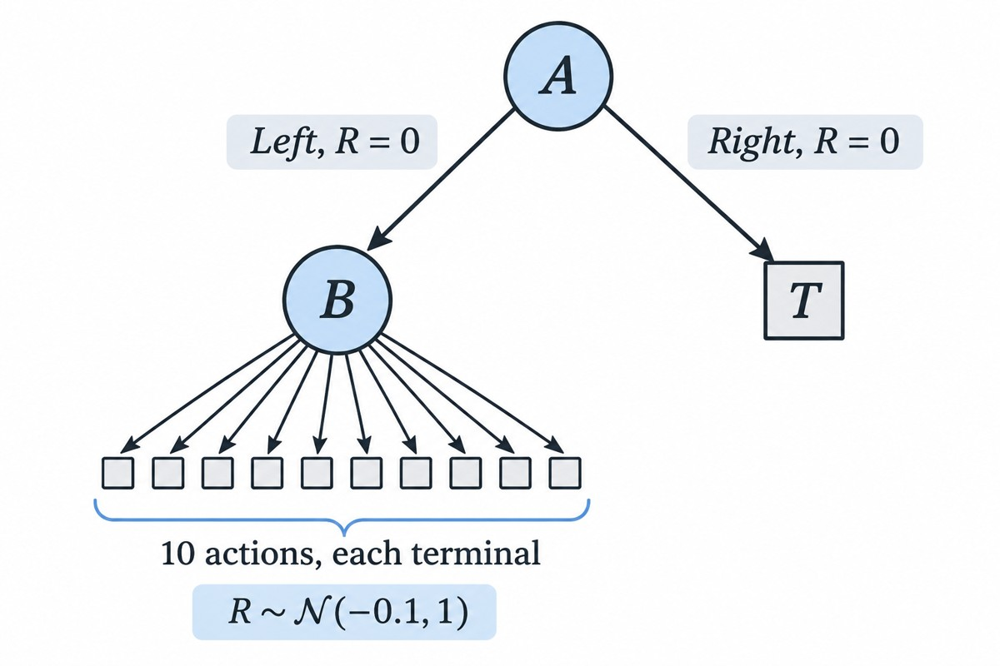
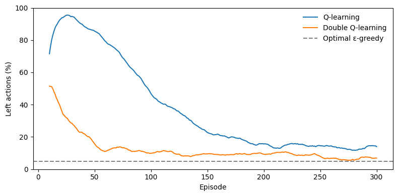

When Correcting Maximization Bias Hurts Q-Learning¶
Q-learning uses the maximum of the estimated action values to bootstrap its estimate of a state’s value. Since the action values are estimated from noisy observations, this can lead to overestimation. Double Q-learning was introduced to address this problem by separating action selection from action evaluation.
In this post, we will use a simple MDP to study how these estimators behave and how their estimation errors interact with exploration. We will start by reproducing the maximization bias example from Sutton and Barto’s Reinforcement Learning: An Introduction (Example 6.7).
The Maximization Bias Problem¶
Consider an MDP with two nonterminal states, \(A\) and \(B\). The agent starts at \(A\) and can either go left to \(B\) or right to a terminal state. Both actions have a reward of 0. At \(B\), the agent can choose any of ten actions, each of which terminates the episode with a reward drawn independently from \(\mathcal{N}(-0.1, 1)\).

The maximization-bias MDP. Adapted from Example 6.7 of Sutton and Barto.¶
With \(\gamma=1\), the optimal action values are
Hence the optimal action at \(A\) is to go right. Let’s see if Q-learning learns this policy.
Q-Learning¶
When we go left from \(A\), the TD target is the maximum of the ten estimated action values at \(B\) (the immediate reward is zero).
Suppose the ten estimates \(\widehat Q(B,a)\) are individually unbiased. Since the maximum is a convex function, Jensen’s inequality gives us
Even if each individual action value is estimated correctly on average, the maximum may be overestimated. When it exceeds 0, the TD update pushes the estimate of the left action toward a positive value, potentially causing the agent to prefer it over the right action.
Double Q-Learning¶
The problem with the maximum is that we use the same noisy estimates to select the action and to estimate its value. In Double Q-learning (van Hasselt, 2010), we maintain two Q-tables. On each transition, we randomly choose one table to update. When updating \(Q_1\), we select the action using \(Q_1\) but evaluate it using \(Q_2\).
When updating \(Q_2\), we swap the roles of the tables. We still need a behavior policy, for which we use \(Q_1+Q_2\). The two tables each receive approximately half the transitions.
If the second table is independent of the first and its action-value estimates are unbiased, then selecting an action with the first table does not select for positive noise in the second. In our example all ten actions have the same true value, so under those assumptions the Double target is unbiased. These assumptions are important; we will revisit them later.
Comparing the Two Algorithms¶
We use a constant step size \(\alpha=0.1\), \(\epsilon=0.1\) and train for 300 episodes. Since each training run is noisy, we average the results over 200 independent runs. Both algorithms start with zero-initialized tables. We randomize ties in greedy action selection and use independent random streams for the two algorithms.
An optimal \(\epsilon\)-greedy behavior policy will still go left with a probability of \(\epsilon/2=0.05\). So the left-action rate should approach 5%, not 0%.
Each episode updates the value of the chosen action at \(A\) and, if the agent goes left, the value of the chosen action at \(B\). For Double Q-learning, the table to update is sampled independently on each transition.
Parameter |
Value |
|---|---|
Independent runs |
200 |
Episodes per run |
300 |
Step size, \(\alpha\) |
0.1 |
Exploration, \(\epsilon\) |
0.1 |
Discount, \(\gamma\) |
1 |
Reward mean, \(\mu\) |
−0.1 |
Reward standard deviation, \(\sigma\) |
1 |
Random seed |
42 |

Fraction of episodes in which the agent goes left, averaged across 200 runs and smoothed with a trailing ten-episode mean. The dashed line marks the optimal epsilon-greedy behavior.¶
Double Q-learning approaches the 5% reference line more quickly. We can also compare the cumulative cost of the learning process. Since the true expected return from going left is \(-0.1\) and the optimal return is 0, each left action incurs 0.1 units of pseudo-regret. We can compute this exactly from the action history, without adding the noise of the realized rewards.
To evaluate the learned policy separately from exploration, we freeze the final tables and choose greedily at \(A\), breaking ties uniformly. As every action at \(B\) has the same expected reward, the greedy policy is optimal exactly when it chooses Right at \(A\).
Metric |
Q-learning |
Double Q-learning |
|---|---|---|
Left actions (last 20 episodes) |
13.62% |
7.28% |
Cumulative pseudo-regret |
11.467 |
3.872 |
Final greedy-policy accuracy |
91.0% |
99.5% |
These results come from a fresh reproduction using the seed and implementation above, not from the original historical training runs. The table reports descriptive sample averages; no confidence intervals were calculated.
Double Q-learning reduces the practical effect of maximization bias in this environment. However, we have not yet shown that the Double estimator produces more accurate action-value estimates or that this improvement holds when we change the reward distribution or the exploration strategy.
There is also a cost to maintaining two tables: each table receives fewer observations. Can we reduce maximization bias while still using all the observations to estimate the action values?